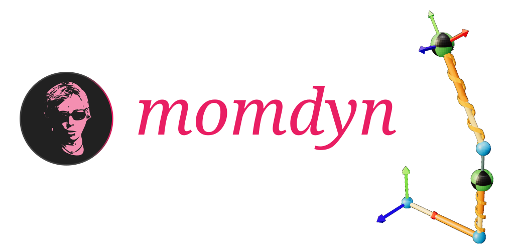

Mobile Multibody Dynamics¶
{kind=link}
Mobile Multibody Dynamics (MOMDYN) is the first multibody dynamics app for iOS and Android. MOMDYN provides an easy to use graphical interface that is familiar to engineers and physicists who have studied classical mechanics, with a limited but powerful set of features similar to modern modeling and simulation software. The software forms a bridge between the”first-principles” approach to dynamics problem solving where one defines kinematic and dynamic equations by hand before developing custom code for each individual system, and the modern approach where the fundamental mathematical equations are obfuscated behind a purely graphical, computer aided design (CAD)-like interface.
Engineering and Physics Simulation in the Palm of Your Hand¶
The creative instinct is one that we humans have little control over. While we would hope that our best ideas strike while we are best-equipped to take action, the reality is that they will frequently hit while we are laying in bed, riding on a train, or out for a walk. On some cases, they may even come while we are sitting in a boring meeting away from the comfort zone of our workstation. For most of us, our mobile devices are never more than a few feet away. MOMDYN lets you take action and build on your ideas in the moment, and watch them take motion in the palm of your hand.
An Entry Point For Dynamics Students and Professionals¶
Multibody dynamics simulation is increasingly becoming an essential discipline for the development of complex mechanical systems. Recent years have seen the rise of many excellent software solutions, many belonging to larger multidisciplinary computer aided engineering packages. These products are great, expansive solutions that can be a pleasure to learn, use, and occasionally abuse. For many professionals, these provide for a lucrative career or business model. For others, the cost is a significant barrier to entry. MOMDYN presents an accessible alternative for engineering students or developing professionals who want to learn the basic principles behind how the advanced software works so they can feel confident in applying those tools in their future careers.
Build On Your Mobile Device, Analyze On A Desktop¶
Your mobile device does a lot of amazing things, but no one would call it a high performance computer. Want to run your model once? No problem, MOMDYN has you covered. Want to run 100,000 cases in a Monte Carlo study? You’re going to want a professional workstation or computing cluster for that. This is advanced stuff, but MOMDYN can help: With the Export menu, you can choose to automatically generate Python source code that will replicate the same equations and parameters that you set up on your device, and can be executed in a Python environment using common and freely available packages. Want phase plots, frequency spectra, or to integrate your mechanism model with another physical or control system? If you can code it, you can do it.
User Interface¶
The graphical front-end of MOMDYN, referred to here as the “Touch interface,” is the means for the user to interact with and visualize elements of the Mechanism module.
Welcome screen¶
The first screen you will see when opening the app, the welcome screen presents you with the option to create a new model, import an existing model, or to view help documentation or tutorials.
Diagram view¶
The modeling components are by default displayed in a schematic representation similar to academic textbooks used in teaching advanced dynamics courses. A 3-D environment may also be chosen where components are shown as primitive solids. The diagram view is also the primary interface for the user to create and edit modeling components, and initiate equation generation and simulation routines.
Report view¶
Tabbed controls allow the user to flip between sections of the report, with separate tabs for constants, generalized coordinates, generalized speeds, frames, vectors, points, bodies, loads, equations of motion, and plots.
Technical Specifications¶
Mechanism Module¶
The analytical back-end of MOMDYN, referred to here as the “Mechanism module,” is implemented using Python, taking very basic data classes (numeric and string) as user inputs to numerous high-level, object-oriented methods.
Features¶
Numeric and string input definition¶
The mobile implementation requires simplification of the user input commensurate with the limited interaction capability provided by a mobile device compared to a desktop workstation. Many high-level methods available in open source software have been re-structured in MOMDYN such that their inputs can be defined using only numeric and string variables.
New/edit/delete methods¶
Each object implemented in the Mechanism module has a “new,” “edit,” and “delete” method.
Embedded documentation¶
Each object implemented in the Mechanism module has documentation that can be accessed from the front-end interface.
Equation of motion generation¶
Once the kinematic and dynamic relations are defined in the Mechanism module, equations relating the generalized coordinates to generalized speeds, equilibrium conditions, mass and forcing matrix are automatically derived. These can be displayed in the front-end, or exported to human-readable source code or typeset reports.
Simulation¶
Commonly used open-source numerical integration algorithms necessary for simulation of dynamic systems have been implemented in architectures that cannot be compiled on mobile device. MOMDYN includes a custom simulation routine that can be built on all devices.
Automated code generation¶
Complex dynamics models created in MOMDYN require interactivity with desktop workstations or high performance computing systems to execute fast and/or high volume analysis. The Mechanism module provides an interface to automatically generate human-readable source code in C, Python, or MATLAB formats that can be transferred to these systems.